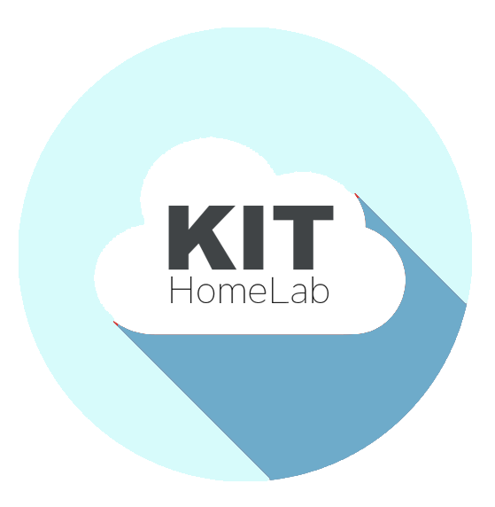

Kit brings the cloud to You!

Most people will never see or own an enterprise server. The majority of users needs can all be solved by hosting your data on the Cloud. Kit HomeLab is a powerful alternitive to traditional cloud computing companies listed below

A 48u rack systems start at $100,000 just for the hardware.

Kit puts the power of cloud servers like aws right into your hands giving you more control over your data. Kit provides powerful computing power only seen in large data centers.

You really only have 3 options when purchasing a home server. Buy a tower server, a rack server, or a low power consumer products.
A / B. Home & Tower servers are great home solutions but they do not provide the memory and computing power that an enterprise rack servers provides. Tower servers have no place to add the moduem and router if your building out your lab.
C. Rack servers can be costly and confusing. Rack systems and HomeLabs can be neverending and expnsive. Wrong parts are cominlly ordered. Configureations and wiring can look sloppy. The systems tend to be large. Most racks start at 12u and go as high as 48u.
Kit fills this gap between a large rack system and the low computing power of
 Here is a table of some compariable hosting plans as of 2018 and there montly running cost. Kit home lab prices are only locked in at the time of purchase. Serverabibility makes prices subject to change. So if you like the specs and the rice lock in your Kit HomeLad today.
Here is a table of some compariable hosting plans as of 2018 and there montly running cost. Kit home lab prices are only locked in at the time of purchase. Serverabibility makes prices subject to change. So if you like the specs and the rice lock in your Kit HomeLad today.
Pros and cons:
Con most are sata and not sas
There are all types of reasons to host your information on the cloud. You can pay a monthly hosting fee with a company like aws, azur, or google cloud or you can run your own servers. Its long been depated the cost of owning your servers
Here is a list of some comparible hp proliant servers for sale by other companies
You can easily spend 10,000 for one server and still have the cost of the home network expences. If you already have cableinternet at home and want a powerfull all in one solution Kit is it. I have attached some server prices just so you can see whats available for 6k
HPE ProLiant DL360 Gen10 - rack-mountable - Xeon Gold 6132 2.6 GHz - 32 GB Price $4,576.99
HP ProLiant DL360 G9 SFF 1U Server, 2x E5-2680v3 2.5GHz 12C, 16GB DDR4, 8x 1.92TB SATA 2.5 SSDs, HP iLO 4, Power Supplies
REFURBISHED Price $11,358.00
After you find a server that you think fits your needs you need to install the sas drives and use the bios to add in an operating system. There is alos the setting up of the router and modum and hooking the switch up to the server and the aditional components to the switch.
Finding a server and seting up a network is complicated and time consuming but working with a home lab is so exciting! creating and building end to end solutions right from your home.
Kit provides a great starting point for people that want to learn more about the cloud.
Why 4u and 6u? If you looking into the rack and blade server markets you find huge 48U racks as the standared for data center. 48 U allows for the best utlization of space and the ability to scale the infastructure. There are almost 0 4u rack systems available becasue the current market demands. Scale and flexibility or compactness designed solutions for photos and other simple data are really your only options.
Kit home lab is for the person that wants to learn hands on about cloud computing and does not have the need to scale up to 48u size. Kit does give you the ability to grow. Kit has 2 aditional unused u's where you can add up to 2 more servers. giving you some serious hourse power. You can configure the aditional 2u'spacifically to your homelab needs.
The tight package, pure power, and compact rack design makes kit the only full home network solution available in the market.
The cloud is always changing and improving. Kit follows those trends and equipement is updated to reflect the current leaders in each industry.
If you or your company is interested in getting hands on with the cloud kit is a great start. Kithomelab is a hardware solution. We are not an IT service company, we do not support software services. Kit is an assembled home network hardware solution with linux ubunto installed. All aditional instalitions and software supprot will need to be done onsite by the your technishion.